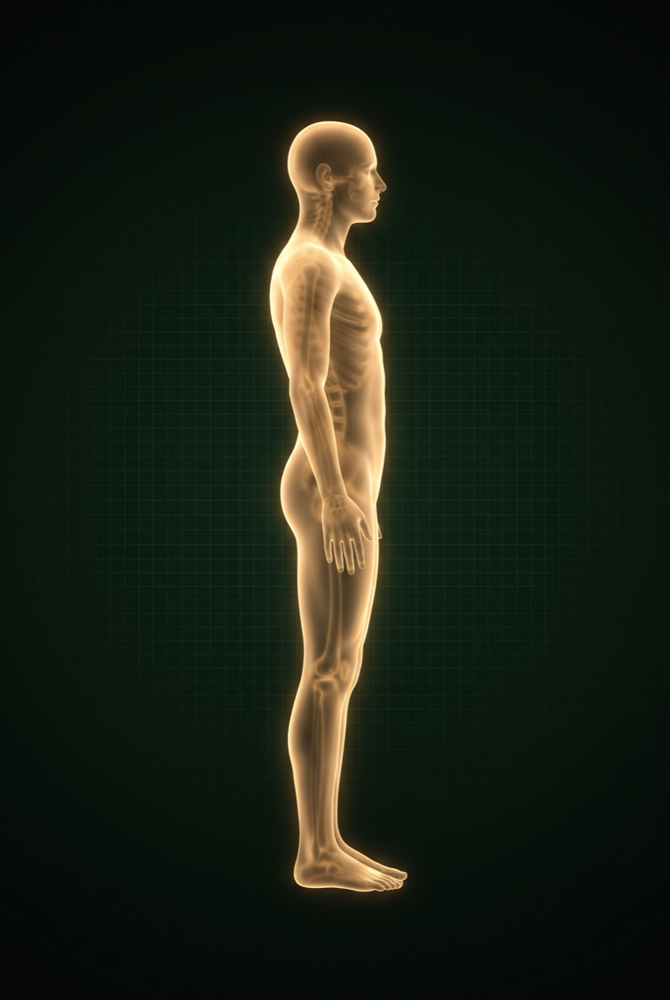
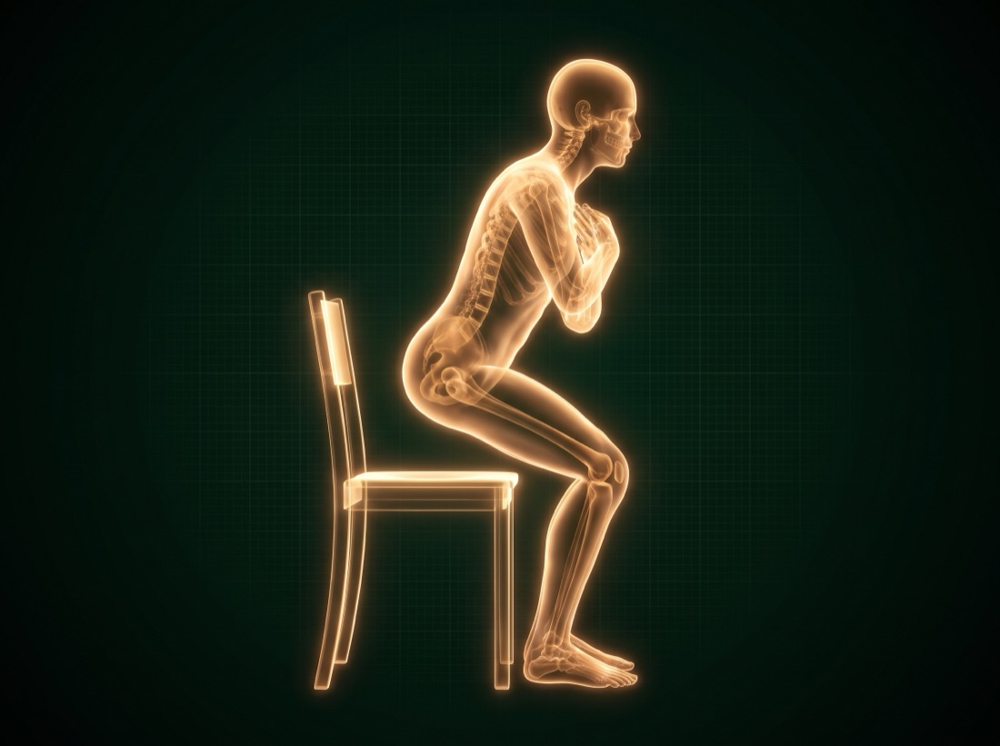
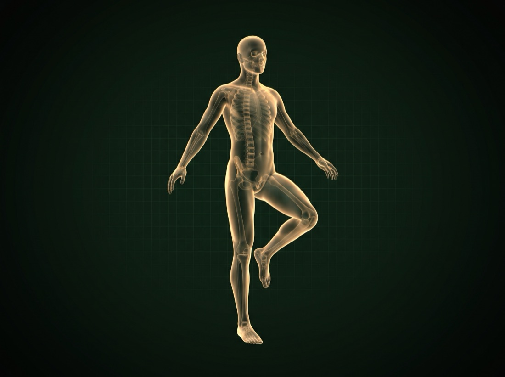
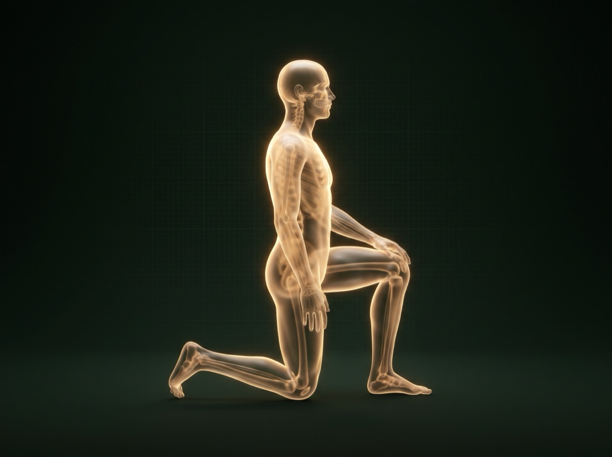
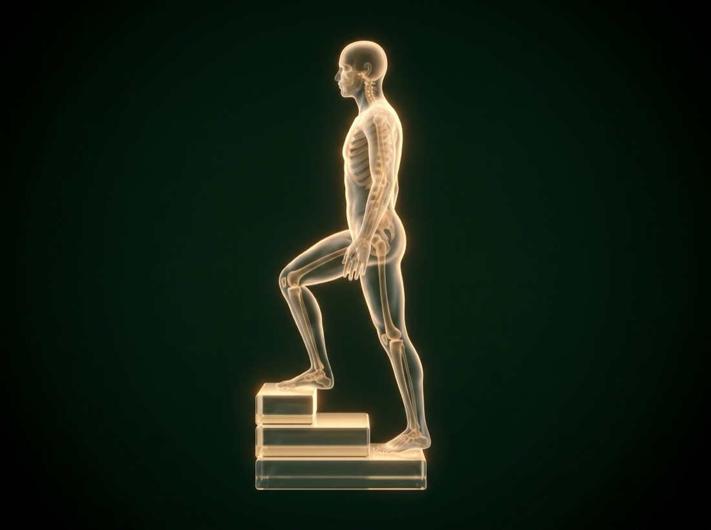
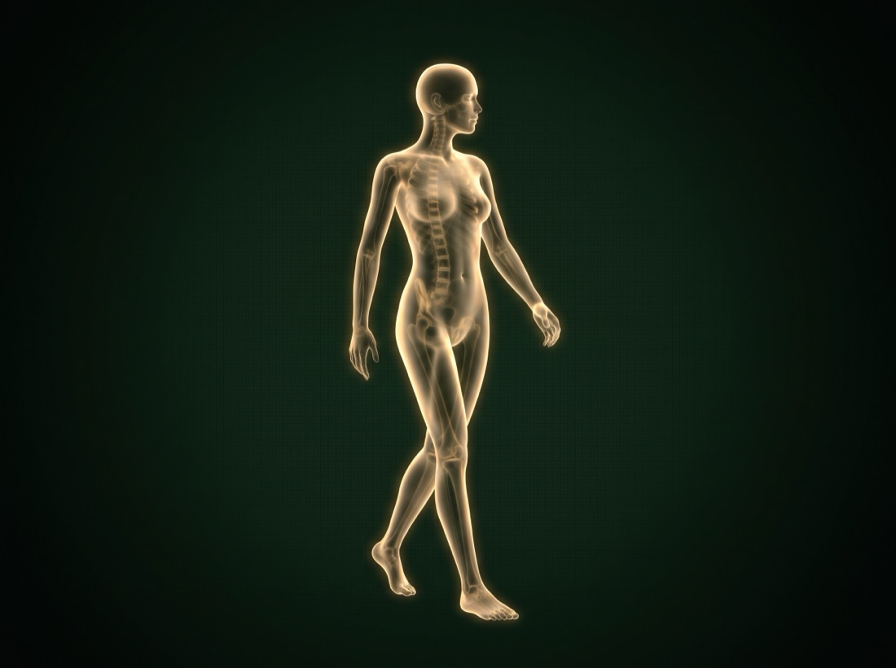

Cosa vorresti tornare a fare?
Il primo incontro comincia così. Mi racconti cosa fai, cosa ti manca, cosa ti fa paura. L'obiettivo è una cosa della tua vita: le scale di casa, una passeggiata al mare, un viaggio.

Chinesiologo a Pietrasanta
Aiuto le persone over 50 a tornare a camminare e vivere in autonomia, con un allenamento su misura anche in natura.
Richiedi il primo incontroChi sono

Lavoro a Libra, a Pietrasanta, con le persone che vogliono continuare a fare le loro cose da sole: camminare, salire le scale, viaggiare, stare con i nipoti.
Prima di qualsiasi esercizio ti faccio una domanda: cosa vorresti tornare a fare? Da quella risposta costruiamo il percorso.
{{Due righe sulla tua storia: perché hai scelto questo lavoro.}}
Parliamone

La longevità, per me
Muoversi in modo naturale, all'aria aperta, per stare bene nel proprio corpo il più a lungo possibile.
Forza, equilibrio, mobilità e fiducia nel proprio corpo. Senza macchinari complicati e senza promesse miracolose.
Il percorso
Il primo incontro comincia così. Mi racconti cosa fai, cosa ti manca, cosa ti fa paura. L'obiettivo è una cosa della tua vita: le scale di casa, una passeggiata al mare, un viaggio.

Osservo i gesti di tutti i giorni: alzarti dalla sedia, stare in equilibrio, camminare. Sempre vicino a un appoggio, senza fretta. Da lì capiamo insieme da dove partire.

Ogni sessione comincia con una domanda: come stai oggi? Lavoriamo su forza, equilibrio e mobilità, spesso all'aperto, nel verde e nella sabbia di Libra. Quando serve, insieme al tuo fisioterapista e al tuo medico.

Il traguardo non è la palestra: è la vita fuori. Camminare tranquillo, viaggiare, giocare con i nipoti. E sapere cosa fare per continuare a stare bene.
Dove senti fatica?

Gira la figura trascinandola, passando il mouse nello spazio intorno o con i pulsanti sotto. Sopra il corpo si ferma: clicca il punto dove senti fastidio, diventa rosso e qui sotto ti racconto cosa possiamo fare. Tocca di nuovo la chiazza per toglierla.
Scegli una zona sulla figura o qui sopra: ti racconto cosa possiamo fare e un gesto da provare oggi.
I gesti della longevità
Provali con calma, da solo o insieme a un tuo genitore. Non è un test medico e non c'è nessun voto: è un modo per capire da dove partire.
Fallo solo vicino a un appoggio sicuro, come un tavolo o un muro. Se un gesto ti sembra rischioso, salta e passa al successivo.

Gesto 1 di 5
Siediti su una sedia stabile, incrocia le braccia sul petto e alzati.
È il gesto che usi ogni giorno per alzarti dal divano, dal letto, dalla macchina.

Gesto 2 di 5
Vicino a un tavolo o a un muro, solleva un piede da terra e conta piano fino a dieci. Poi cambia gamba.
L'equilibrio è quello che ti tiene in piedi quando inciampi.

Gesto 3 di 5
Su un tappeto, scendi a sederti come ti viene e rialzati. Puoi aiutarti con le mani o con una sedia.
Serve per giocare con i nipoti, per stare in spiaggia, e se un giorno cadi.

Gesto 4 di 5
Una rampa normale, al tuo passo, tenendoti al corrimano se vuoi.
Le scale chiedono forza alle gambe e fiato, insieme.

Gesto 5 di 5
Cammina piano in un posto sgombro, poi gira testa e spalle per guardare dietro di te.
Ti serve per attraversare la strada e per restare stabile quando qualcuno ti chiama.

Il luogo
Uno spazio a Pietrasanta con piante tropicali, un giardino e una zona di allenamento all'aperto nella sabbia. Un posto dove tornare all'essenziale e sentirsi a casa.
Via Santa Maria 33, Pietrasanta (LU)
Scopri LibraStorie
Qui racconteremo storie vere di chi si allena a Libra, con il loro permesso. Le prime arriveranno presto.
Domande frequenti
Il corpo continua ad adattarsi a ogni età, se gli dai il tempo giusto. Si parte da dove sei oggi, con gradualità.
È una paura comprensibile, soprattutto dopo un intervento o una caduta. Si comincia da gesti semplici, con un appoggio e con me accanto, e si va avanti solo quando ti senti sicuro.
Libra non è una palestra: è un posto nel verde, piccolo e tranquillo. Spesso ci alleniamo all'aperto.
Quando la fisioterapia è finita, a volte forza e sicurezza vanno ancora costruite per tornare alle tue attività. In quel caso il mio lavoro continua quello del fisioterapista, non lo sostituisce.
Ti ascolto: cosa fai, cosa vorresti tornare a fare. Poi osservo come cammini, come ti alzi, come stai in equilibrio, sempre vicino a un appoggio. Da lì capiamo insieme da dove partire.
In cima al percorso
Scrivi alla segreteria: ti spieghiamo come funziona e troviamo insieme il giorno giusto.
Scrivici su WhatsApp{{Numero WhatsApp della segreteria}}
Presto sul sito: la richiesta di appuntamento online, i pacchetti di lezioni e l'area clienti, riservati a chi si registra.